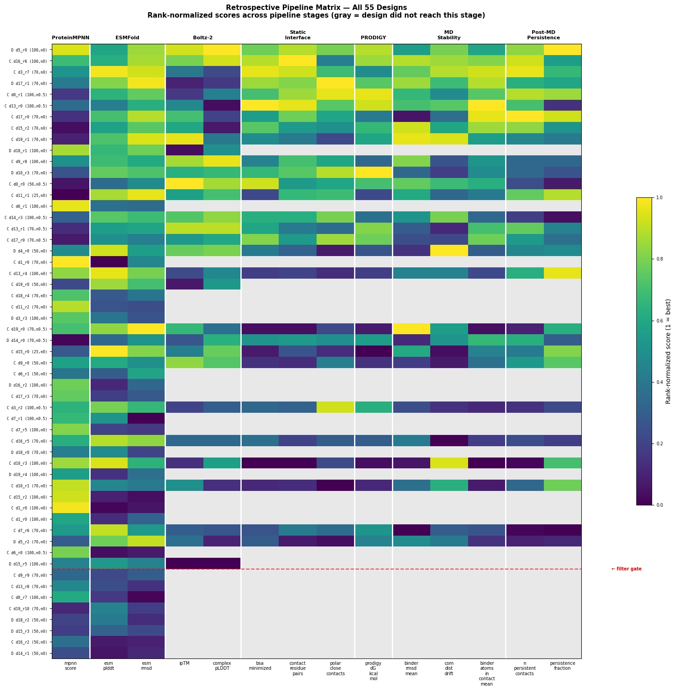

Which candidates form the most credible modeled complexes — and do the scoring methods agree?
Twenty-eight designs survived the full computational pipeline: RFdiffusion backbone generation, ProteinMPNN sequence design, ESMFold fold validation, structural filtering, Boltz-2 complex prediction, interface fingerprinting, and 1 ns molecular dynamics simulations. Each design now has metrics from multiple analyses. The question is whether those metrics tell a consistent story — and what happens when they do not.
Five evidence types were assembled for each design. Boltz-2 complex confidence asks whether an independent predictor recovers a plausible complex from sequence alone. Static interface geometry describes the physical extent of the minimized interface. PRODIGY provides an empirical affinity-like score. MD-derived metrics test whether the modeled complex remains structurally coherent during short simulation. Post-MD contact persistence measures which designed interactions remain populated over the trajectory.
If every pipeline stage measured the same underlying property, its outputs would be strongly correlated. They are not. Most cross-stage relationships are weak or absent, indicating that the stages contribute partly independent information.
The strongest workflow-level finding is the relationship between static residue-level contacts and post-MD persistence. This is not unexpected at all - Designs that begin with richer contact networks in the minimized structure tend to retain more persistent contacts during molecular dynamics. The Spearman correlation (ρ = +0.679, p = 0.0001) makes static fingerprinting a useful low-cost triage feature before committing to more expensive simulation.
This does not make static geometry a substitute for MD. It means the static screen contains information that survives the transition to dynamics.
PRODIGY predicts binding free energy from interfacial contact features. Across these designs, the rank-normalized PRODIGY affinity score correlates strongly with buried surface area (ρ = +0.825). The practical implication is that PRODIGY contributes less independent information than Boltz confidence or MD stability; much of its ranking is already encoded in interface extent.
The predicted ΔG values span −5.2 to −11.4 kcal/mol, with a mean of −8.2 ± 1.8 kcal/mol. For this workflow, the relative ordering is more useful than the absolute values.
The downstream scorecard averages seven rank-normalized features: buried surface area, residue contact pairs, polar close contacts, Boltz-2 ipTM, PRODIGY ΔG, binder RMSD, and absolute center-of-mass drift. Every design had complete static, PRODIGY, and MD evidence.
| Rank | Design | Hotspot | BSA | Contacts | PRODIGY ΔG | RMSD | COM drift | Score |
|---|---|---|---|---|---|---|---|---|
| 1 | len100_clusterA_noise0__design_16_0_rank6 | clusterA | 966.7 | 52 | −10.11 | 1.37 | +0.11 | 0.812 |
| 2 | len100_distributed_noise0__design_5_0_rank0 | distributed | 896.4 | 44 | −10.43 | 1.55 | +0.18 | 0.804 |
| 3 | len100_clusterB_noise05__design_13_0_rank0 | clusterB | 1105.7 | 48 | −10.65 | 1.50 | −0.27 | 0.783 |
| 4 | len50_clusterA_noise05__design_0_0_rank0 | clusterA | 986.3 | 33 | −9.62 | 1.47 | +0.28 | 0.743 |
| 5 | len70_clusterA_noise0__design_3_0_rank7 | clusterA | 1011.2 | 47 | −8.06 | 1.47 | +0.10 | 0.720 |
| 6 | len70_distributed_noise0__design_17_0_rank1 | distributed | 964.4 | 40 | −9.81 | 1.41 | −0.28 | 0.706 |
| 7 | len100_clusterB_noise05__design_0_0_rank1 | clusterB | 868.3 | 41 | −11.37 | 1.51 | +0.51 | 0.672 |
| 8 | len70_clusterB_noise0__design_19_0_rank1 | clusterB | 804.8 | 31 | −8.47 | 1.26 | −0.08 | 0.653 |
| 9 | len70_clusterB_noise0__design_15_0_rank2 | clusterB | 895.2 | 33 | −9.21 | 1.32 | +0.37 | 0.646 |
| 10 | len100_clusterA_noise05__design_14_0_rank3 | clusterA | 850.0 | 34 | −7.76 | 1.56 | +0.18 | 0.635 |
The richest static contact network among the leaders: 52 residue contacts, 966.7 Ų BSA, ipTM 0.919, binder RMSD 1.37 Å, and minimal COM drift.
Slightly smaller interface, but the strongest overall Boltz confidence among the top three (ipTM 0.941) and a favorable PRODIGY score.
The largest buried interface in the leading trio at 1105.7 Ų, with 48 contacts and strong affinity-like scoring despite lower ipTM than ranks 1 and 2.
The point is not that one metric selects a winner. Similar composite scores arise from different evidence profiles, which is exactly what a useful experimental shortlist should preserve.
The retrospective matrix places all 55 designs from the parameter-sensitivity study on a common scale. Fourteen quantitative metrics spanning seven pipeline stages are rank-normalized to [0, 1], where 1 is best. Designs that did not reach a stage remain blank, making attrition and evidence coverage visible in the same figure.

The full-pipeline composite averages all available stage-level metrics. It does not produce an unrelated set of winners. The same two designs occupy the top two positions, although their order is reversed, and four of the top five appear in both rankings. Differences emerge where upstream model confidence and downstream interface or MD evidence weight candidates differently.
| Rank | Design | Hotspot | Boltz tier | Composite |
|---|---|---|---|---|
| 1 | len100_distributed_noise0__design_5_0_rank0 | distributed | validated | 0.818 |
| 2 | len100_clusterA_noise0__design_16_0_rank6 | clusterA | validated | 0.794 |
| 3 | len70_clusterA_noise0__design_3_0_rank7 | clusterA | validated | 0.737 |
| 4 | len70_distributed_noise0__design_17_0_rank1 | distributed | validated | 0.680 |
| 5 | len100_clusterB_noise05__design_0_0_rank1 | clusterB | validated | 0.663 |
| 6 | len100_clusterB_noise05__design_13_0_rank0 | clusterB | validated | 0.631 |
| 7 | len70_clusterB_noise0__design_17_0_rank0 | clusterB | validated | 0.592 |
| 8 | len70_clusterB_noise0__design_15_0_rank2 | clusterB | validated | 0.585 |
| 9 | len70_clusterB_noise0__design_19_0_rank1 | clusterB | validated | 0.583 |
| 10 | len100_distributed_noise0__design_18_0_rank1 | distributed | uncertain | 0.570 |